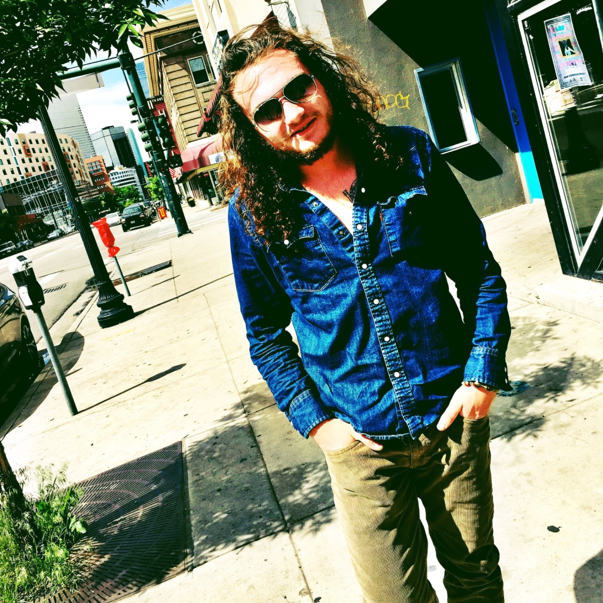
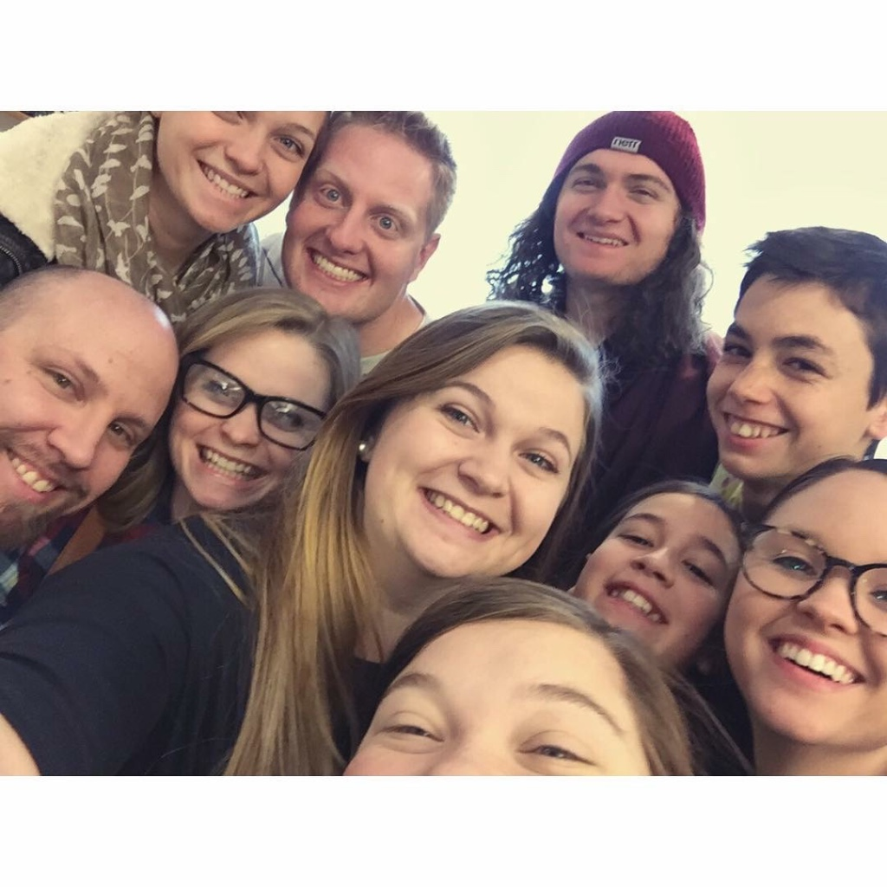
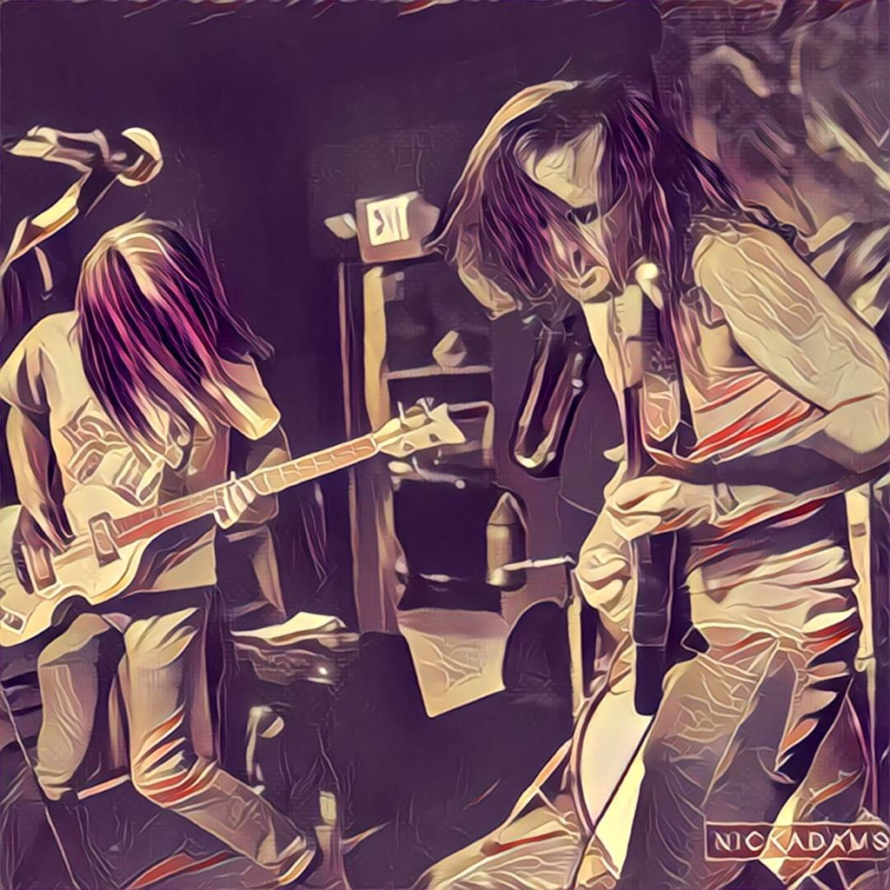
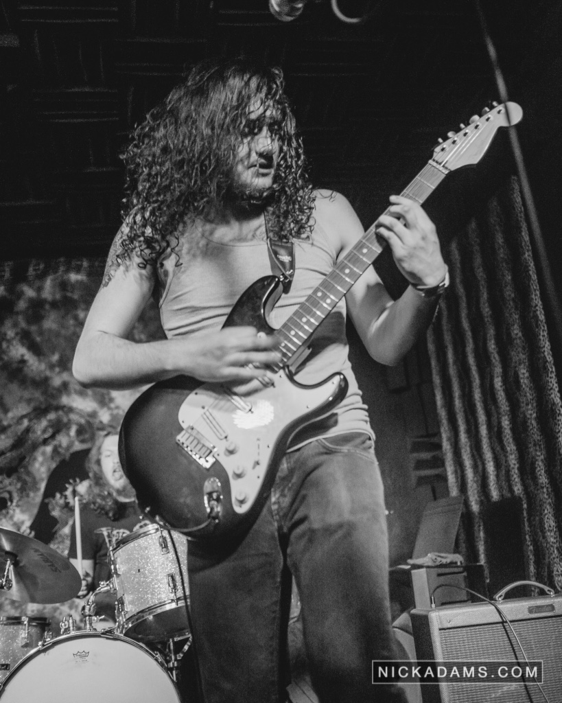

Indiana Sands
About Me
 My name is Indiana Sands. I was born on November 11th, 1996 in American Fork, Utah. I grew up in young Lehi, Ut where I finished high school at Lehi High. Over the course of my life so far I have been lucky to experience all that I have. From playing in a rock n roll band, to falling in love and learning new things.
My family consists of my Mother, LynnDee, my father, Jim, my six sisters: Aubrey, Ashley, Melissa, Briar. Allison, and Samantha, as well as my brother Isaac, and my three brothers-in-law: Cameron, Tom and Shaun. Growing up I shared a lot of memories with each and every one of them.
Right along with my family are some of my most cherished friends from over the years. When I first started junior high, I met some of my closest friends Parker and Jeff. Over the years we have stayed very close and often see each other. Along with those two over the years I met my present and very loved girlfriend Anastayja. Majority of my favorite memories have been made with her and I expect many more to come....... (Whoever said Tinder doesn't work lied!)
More...
 The year I got into high school was just around the same time that I started taking professional guitar lessons, playing in Breezeway, AND learning programming. These were all very important things in my life and still are as I continue to work at these trades.
In my band Breezeway - which was started our sophomore year - we have our drummer, Connor Gerson, bassist, Chase McKnight, and myself which plays guitar and vocals. We've been at it for over three years now; playing shows and other cool opportunities all across Utah (and even Arizona). Some of the coolest things we've done so far are playing on tv.... TWICE, and participating in a Skull Candy photo-shoot show. Playing with Breezeway is one of my favorite things to do, and something I would love to take to the next level.
Some other hobbies I enjoy are computer programming, which I've actually been doing since junior high, longboarding, hiking, video games, movies, and going to concerts. I enjoy listening to rock n roll such as, Led Zeppelin, My Morning Jacket, Howlin' Wolf, and so much more. Majority of my favorite foods are either Indian or pizza. Although I've never been one to complain about a good burger. As for the most important thing about me, the answer is yes, I was named after Indiana Jones.